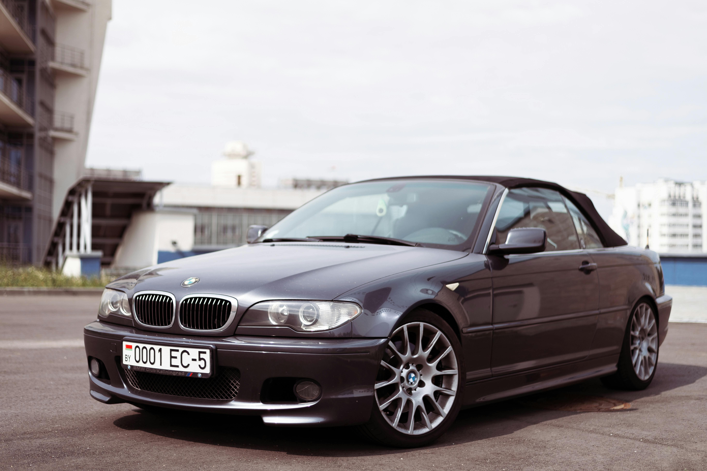
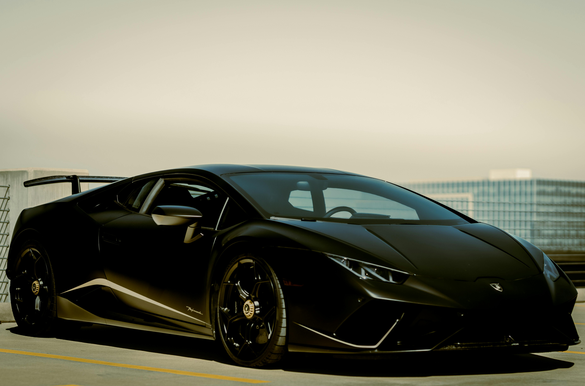
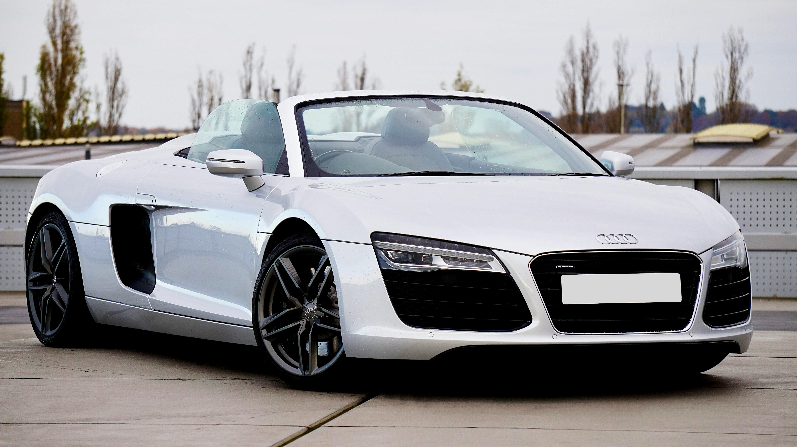
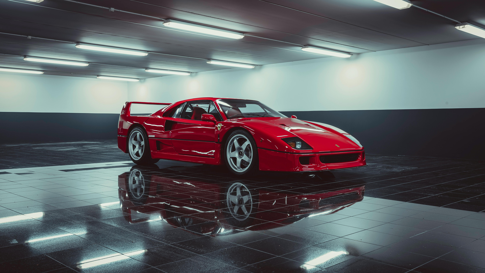

-
Lincoln Continental

Descrição
O Lincoln Continental 1960 é um ícone do design automotivo americano, conhecido por sua elegância, luxo e inovações. Com um perfil baixo e linhas limpas, possui uma grade larga, faróis duplos circulares, e detalhes cromados. As portas traseiras abrem na direção oposta às dianteiras ("suicide doors"), e ele está disponível em versões sedã e conversível. Seu motor V8 e transmissão automática garantem desempenho robusto e condução suave, enquanto a suspensão proporciona conforto. Inclui características de segurança avançadas para a época, como cintos de segurança. O Lincoln Continental de 1960 é um símbolo de status e elegância, frequentemente associado a figuras influentes e momentos históricos.
-
Mercedes AMG GT

Descrição
A Mercedes AMG GT é um carro esportivo de alto desempenho com um design agressivo e aerodinâmico. Apresenta uma frente marcante com uma grade larga e faróis LED afilados, uma carroceria esculpida com linhas fluidas, e rodas de liga leve de grande diâmetro. A traseira possui lanternas LED estreitas e um sistema de escapamento esportivo. O interior é luxuoso, com assentos esportivos em couro, um painel de instrumentos digital, e acabamentos em fibra de carbono e alumínio. Equipado com um potente motor V8 biturbo e transmissão de dupla embreagem, oferece uma experiência de condução emocionante e envolvente, combinando alta performance com tecnologia avançada e conforto.
-
BMW 3 Series E46
Descrição
Além de seu design icônico e desempenho impressionante, o BMW 3 Series E46 oferece uma ampla variedade de recursos de conforto e tecnologia para aprimorar a experiência de condução. Sua cabine espaçosa e bem projetada proporciona conforto para motorista e passageiros, enquanto os materiais de alta qualidade e os acabamentos refinados refletem o compromisso da BMW com o luxo. Recursos como sistema de áudio premium, sistema de navegação, controle de clima dual-zone e bancos esportivos aquecidos contribuem para uma experiência de condução premium. Além disso, sua reputação de confiabilidade e durabilidade solidifica o E46 como um dos modelos mais amados e respeitados da BMW.
-
Lamborghini Huracán LP 640-4 Performante
Descrição
Além do desempenho excepcional, o Lamborghini Huracán LP 640-4 Performante possui um sistema de suspensão adaptativa que proporciona uma condução precisa e confortável em diversas condições de estrada. Sua aerodinâmica avançada, incluindo um sistema de aerodinâmica ativa chamado Aerodinamica Lamborghini Attiva (ALA), garante estabilidade e controle mesmo em altas velocidades. O design agressivo e elegante do Huracán LP 640-4 Performante reflete sua herança de corrida e atrai admiradores onde quer que vá. É um carro que oferece uma experiência de condução emocionante tanto na pista quanto nas estradas do dia a dia.
-
Audi R8 Spyder
Descrição
O Audi R8 Spyder é um supercarro conversível de alta performance, conhecido por seu design elegante e desempenho impressionante. Equipado com um motor potente e tração nas quatro rodas, oferece uma experiência de condução emocionante e dinâmica. Seu interior luxuoso e tecnologicamente avançado proporciona conforto e sofisticação, enquanto sua capota retrátil adiciona uma dose extra de adrenalina ao dirigir ao ar livre. Em resumo, o Audi R8 Spyder combina estilo, potência e tecnologia para uma experiência de condução excepcional.
-
Ferrari F40
Descrição
O Ferrari F40 é um ícone do mundo automotivo, lançado em 1987 para comemorar o 40º aniversário da Ferrari. Este supercarro é conhecido por sua aparência agressiva, performance extraordinária e purismo de engenharia. Equipado com um motor V8 biturbo, é capaz de atingir velocidades incríveis e oferecer uma experiência de condução visceral. Sua produção limitada e status lendário o tornam um dos carros mais desejados por colecionadores e entusiastas de todo o mundo.